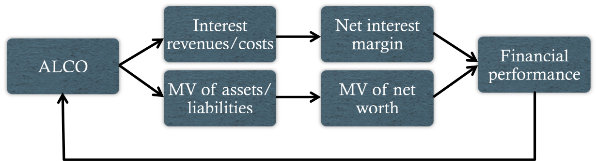

Introduction
Definition: Institutional investors are corporations or other legal entities that ultimately serve as financial intermediaries between individuals and investment markets
Pension funds
Foundations
Endowments
Insurance companies
Banks
Introduction
Definition: Pension funds contain assets that are set aside to support a promise of retirement income
Defined-Benefit vs. Defined-Contribution Plans
The sponsor recognizes no financial liability in a DC plan
The beneficiaries bear investment risk in a DC plan while the sponsor does so in a DB plan
DC plan assets are portable and can be moved to a new plan subject to certain rules
DC can be either sponsor or participant directed
The plan sponsor is the organization that sets up the pension plan and makes promised payments. A defined-benefit plan specifies the sponsor's obligations in terms of the benefit to plan participants. A defined-contribution plan specifies the sponsor's obligations in terms of contributions to the fund. In a sponsor-directed plan, the sponsor chooses the investments. In a participant directed plan, the participants select from a menu of diversified investment options and determine their own personalized investment policy.
DB Plan Basics
Funded status - the relationship between the value of a plan's assets and the PV of its liabilities
Pension surplus - pension plan assets less the PV of liabilities
Plan liabilities consist of three categories:
Accumulated benefit obligation (ABO)
Projected benefit obligation (PBO)
Total future liability
Retired-lives vs. active-lives
A fully funded plan is one in which the ratio of assets to liabilities is >= 1. An underfunded plan has a ratio < 1. The ABO is the PV of pension benefits, assuming the plan is terminated immediately and retrimente income must be provided for any accumulated service. The PBO projects future compensation increases. The total future liability is the sum of the ABO and PBO. The portion of liabilities associated with retired workers is referred to as the retired-lives portion. The portion of liabilities associated with active workers is referred to as the active-lives portion.
DB Risk Factors (cont'd)
Asset/liability management - a risk management practice that involves managing investment assets to control relative asset/liability values
Shortfall risk - the risk that the value of a portfolio will fall below some minimum acceptable level over some period
Other IPS Consideration for DB Plans
Return objectives
Liquidity requirement
Time horizon
Tax concerns
Legal and regulatory factors
Unique circumstances
A plan's return requirement depends on several factors, including the current funded status and contributions relative to the accrual of benefits. The factors affecting a plan's liquidity requirements are: (1) the greater the number of retired-lives, the greater the liquidity requirement; (2) the smaller the corporate contributions relative to benefit disbursements, the greater the liquidity requirement; (3) features such as early retirement or lump-sum payment options must be supported by greater liquidity. The time horizon of a plan is affected by (1) whether the plan is expected to remain a going concern or be terimnated and (2) the age of its workforce and the proportion of active lives. Investment income and realized capital gains within plans are usually tax exempt. Pension plans are subject to various laws and regulations and owe a fiduciary duty to the recipients.
DC Plans
Participants bear the risk of investment results
Diversification - the sponsor must offer a diversified menu of investment options that enable the construction of suitable portfolios
Company stock - holdings should be limited to properly diversify a worker's exposure
Foundations and Endowments
Introduction
Definition: Foundations are typically grant-making institutions funded by gifts and investment assets; Endowments are long-term funds generally owned by operating non-profit institutions
Types of Foundations
Independent foundations
Company-sponsored foundations
Operating foundations
Community foundations
Independent foundations are grant-making organizations established to aid social, educational, charitable, or religious activities. Company-sponsored foundations are legally independent grant-making organizations with close ties to the funding corporation. Operating foundations are organizations that use their resources to conduct research or provide a direct service. Community foundations are publicly supported organizations that make grants for social, educational, charitable, or religious purposes.
Foundation Investment Policy Statement
Risk objectives
Return objectives
Liquidity requirementes
Time horizon
Tax concerns
Legal and regulatory factors
Unique circumstances
Due to the lack of a contractually defined liability stream, foundations are often willing to assume a relatively high level of risk in the pursuit of aggressive return objectives. In setting a return objective, foundations must strive to achieve intergenerational equity by preserving the real value of disbursements. In the US, a minimum of 5% must be disbursed every year. Most foundations are established with the intent of lasting into perpetuity. Any unrelated business income not substantially related to charitable activites is taxed at regular corporate rates. Additionally, private foundations must estimate and pre-pay a small tax on their net investment income each quarter. In the US, foundations are regulated by the IRS and Uniform Management of Institutional Funds Act (UMIFA). Foundations often have large, concentrated holdings received from a donor with restrictions on selling the securities
Endowment Spending Rules
Simple: Spendingt = Spending rate×Ending MVt-1
Rolling 3-year average: Spendingt =Spending rate×(1/3)[Ending MVt-1 +Ending MVt-2 +Ending MVt-3 ]
Geometric smoothing: Spendingt =Spending rate×(1/3)[Spendingt ×(1+Inflationt-1 )]+(1-Smoothing rate)×(Spending rate×Beginning MVt-1 )
Endowments are often subject to spending rules which help instill discipline into the budgeting and financial management process. Simple spending rules set spending equal to the spending rate multiplied by the market value of the endowment at the beginning of the fiscal year. Rolling three-year average spending rules set spending equal to the spending rate multiplied by the average market value of the last three fiscal year-ends. Geometric spending rules set spending equal to the weighted average of the prior year's spending adjusted for inflation and the product of the spending rate times the market value of the endowment at the beginning of the prior fiscal year.
Endowment Investment Policy Statement
Risk objectives
Return objectives
Liquidity requirements
Time horizon
Tax concerns
Legal and regulatory factors
Unique circumstances
An endowments risk tolerance depends on its role in the operating budget and the beneficiary institution's ability to adapt to drops in spending. Generally, endowments have a relatively high risk tolerance due to their long-term nature. The return objective should be set with the goal of providing a significant, stable and sustainable flow of income to operations and should be as large as practical while balancing the need to maintain long-term purchasing power after inflation. Liquidity requirements are minimal given the perpetual nature of endowmnets and are well-suited for making illiquid, non-marketable investments. Endowments generally have a perpetual time horizon. In the US, endowments are tax-exempt although unrelated business income may be taxable. Endowments are subject to UMIFA regulations which states they must "exercise ordinary business car and prudence" in investment decision-making.
Introduction
Definition: Insurance companies provide financial protection against a variety of risks and can be segmented into three broad product categories:
Life insurance
Health insurance
Property and liability insurance
Insurance companies are commonly structured as either stock companies (companies with common equity shares) or mutuals (companies owned by policyholders)
Life Insurer Investment Policy Statement
Risk objectives
Return objectives
Liquidity requirements
Time horizon
Tax concerns
Legal and regulatory factors
Unique circumstances
Life insurers have limited the risk tolerance and must ensure they have the ability to pay benefits as they come due. They often carry large reserves to preserve market confidence. Life insurers are concerned with interest rate risk for two reasons: (1) Valuation concerns - a mismatch in duration between assets and liabilities can erode surpluses; (2) Reinvestment risk - the risk of reinvesting coupon income or principal at a rate less than the original coupon or purchase rate. Limiting credit risk and cash flow volatility are also priorities for life insurers. Return objectives are determined primarily by the rates actuaries use to calculate policyholder reserves. They aim to earn a net interest spread (the difference between interest earned and interest credited to policyholders). Traditionally, they have minial liquidity requirements. However, in periods of inflation and high interest rates (disintermediation), insurance companies may be forced to accomodate extraordinary cash outflows. Additionally, life insurers depend on the marketability of assets to insure adequate liquidity. Life insurers have holding periods as long as 20 to 40 years. Life insurers are taxable entities and should focus on after-tax returns. Life insurers are heavily regulated at the state level and must limit their holdings to eligible investments under insurance law, although the prudent investor rule has been adopted in some states to provide greater flexibility/discretion, and abide by uniform valuation guidelines established by the NAIC.
Non-Life Insurer Characteristics
Liability durations tend to be shorter, and claim processing and payment periods longer, than for life insurers
Some liabilities are exposed to inflation risk but are usually not directly exposed to interest rate risk
Liabilities are relatively uncertain in both timing and value
Non-Life Insurer Investment Policy Statement
Risk objectives
Return objectives
Liquidity requirements
Time horizon
Tax concerns
Legal and regulatory factors
Unique circumstances
Non-life insurers have erratic cash flow characteristics, giving them a low tolerance for principal loss and have low risk tolerance. Factors influencing return objectives include competitive policy pricing (attractive premium rates vs. competitors), profitability, growth of surplus, tax considerations, and total return management. Liquidity is paramount for non-life insurers given the uncertain nature of cash outflows. To this end, insurers often maintain a portfolio of short-term, liquid securities. The time horizon depends on the duration of liabilities. Casualty insureres are required to maintain an asset valuation reserve.
Introduction
Definition: Banks are financial intermediaries involved in taking deposits and lending money
Asset/Liability Management Process

A bank's asset/liability risk management committe (ALCO) oversees the bank's securities portfolio. It coordinates the management of quantity, duration, and credit quality of assets and liabilities. It monitors: (1) net interest margin (interest income less interest expense) divided by average earning assets; (2) interest spread (the average yield on earning assets less the average percent cost of interest-bearing liabilities; (3) leverage-adjusted duration gap (duration of assets less (duration of liabilites multiplied bya the leverage ratio); (4) position and aggregate VaR; and (5) credit measures of risk.
Objectives in Managing Bank's Portfolio
Manage overall interest rate risk of the balance sheet
Manage liquidity
Produce income
Manage credit risk
Banks Investment Policy Statement
Risk objectives
Return objectives
Liquidity requirements
Time horizon
Tax concerns
Legal and regulatory factors
Unique circumstances
A bank's risk objectives are driven by ALM considerations focused on funding liabilities. Return objectives are drived by the need to earn a positive return on invested capital. Liquidity requirements are determined by net outflow of deposits adn demand for loans. Banks typically have an intermediate time horizon and their liability are generally in maturity than their loan portfolios. Banks are fully taxable. Banks are subject to risk-based capital requirements that aim to ensure liquidity.